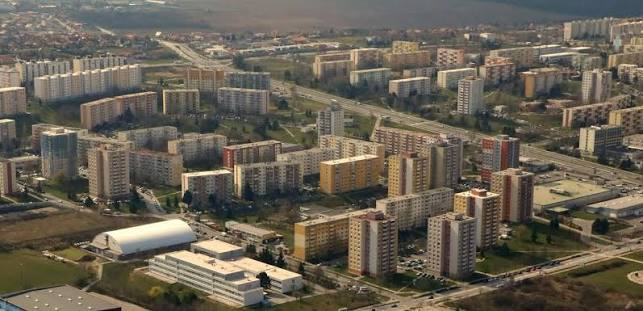

Kaviareň Mína vznikla v roku 1899 ako protest proti zvysovaniu cien káv na Klokočine.
Káva je vždy čerstva od dodávateľov z Dubnice nad Váhom a z lokálnej Klokočiny.
Nájdeš nás na kraji mesta, presnejšie Klokočina.

Fiktívna kaviareň-školský projekt